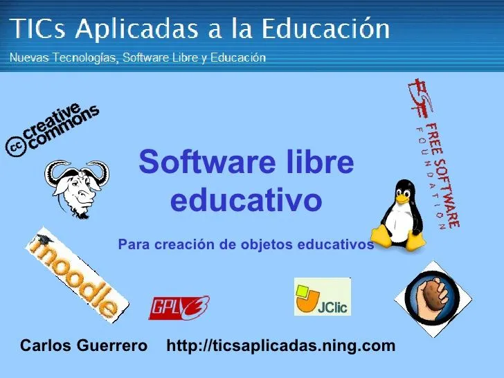
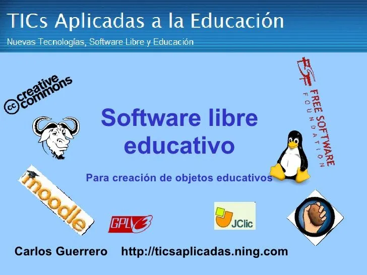

Software libre
El término software libre refiere el conjunto de software que por elección manifiesta de su autor, puede ser copiado, estudiado, modificado, utilizado libremente con cualquier fin y redistribuido con o sin cambios o mejoras.
¡Bienvenido a Artículos Locos!
El término software libre refiere el conjunto de software que por elección manifiesta de su autor, puede ser copiado, estudiado, modificado, utilizado libremente con cualquier fin y redistribuido con o sin cambios o mejoras.
